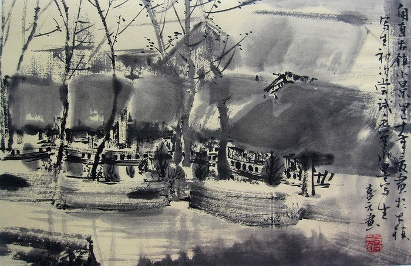
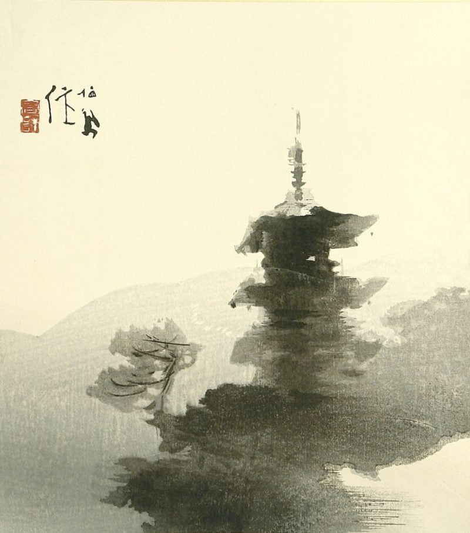
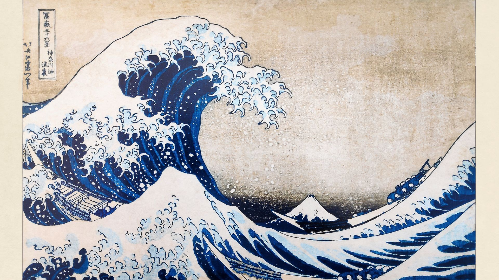
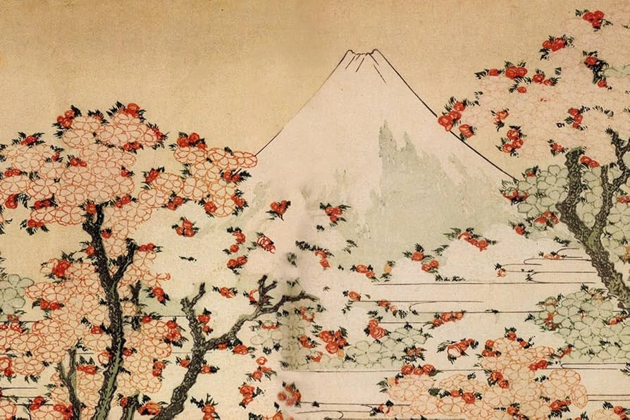

Grabados
Grabados tradicionales japoneses de los períodos Edo y Meiji.
Bienvenido a la galeria de arte Osaka, especializada en la importación de todo tipo de arte japones
Fundada en el año 1998 por dos amigos apasionados de la cultura japonesa, llevamos trabajando mas de 20 años con clientes selectos de todo el mundo con la importación de las mejores piezas de arte japones
Trabajamos tanto con obras de artistas modernos como con obras de arte tradicional, poniendo especial atención en seleccionar obras únicas que resistan el paso del tiempo
Actualmente poseemos un extenso fondo y una gran selección de artistas, respetando su creatividad y procesos creativos logrando ofrecer piezas autenticas que respetan todo el caracter de sus creadores
Aseguramos la autenticidad de cada pieza mediante un equipo de los mejores expertos, y nos encargamos de ofrecer una experiencia a nuestros clientes discreta y sencilla
Grabados tradicionales japoneses de los períodos Edo y Meiji.
Pintura monocromática con tinta y caligrafía japonesa.
 Una seleccion de exclusivas obras maestras
 